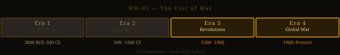

The Cost of War — Studio Packet¶
Studio Code: WH-05 Subject Area: World History — Era 3–4 (WWI through WWII and Cold War) Suggested Cycle: Year 1, Cycle 5 Duration: 6 weeks

World History Era Timeline — highlighted segment(s) indicate this studio's historical period.The Essential Question¶
Who pays the cost of war — and who gets to tell the story?
Why This Studio Matters¶
Wilfred Owen wrote "Dulce et Decorum Est" in a field hospital, dying of the gas that would kill him eight days before the Armistice. The Kipling poem that sent his generation to die called it sweet and fitting. FDR's Four Freedoms speech asked the world to believe in a war being fought for universal ideals. Night was written by a 15-year-old who survived Auschwitz. Persepolis was drawn by a woman who lived through the Iranian Revolution as a child.
This studio builds WH.6_12.2 (ideology and propaganda) and WH.6_12.5 (war and its consequences) while developing the literary analysis skills in R.7 and R.8 — style, word choice, and literary elements as evidence of historical meaning. It asks students to read multiple genres of war narrative simultaneously and compare what each reveals.
Active Standards¶
| Standard | What You're Targeting |
|---|---|
| WH.6_12.2 + Era 3–4 | Ideology, propaganda, and the narratives used to justify and mobilize for war |
| WH.6_12.5 + Era 4 | The causes and consequences of WWI and WWII |
| 9-10.R.7 | Analyzing how word choice, syntax, and style create meaning |
| 9-10.R.8 | Literary elements: imagery, tone, irony, structure as carriers of meaning |
| 9-10.R.9 | Comparing arguments across texts: what is each text's implicit argument about war? |
ELA ↔ SS Crosswalk¶
Every text in this studio does double duty across ELA and Social Studies standards:
-
"Dulce et Decorum Est" (Owen) — When you analyze it for R.7 (how word choice, syntax, and rhythm create meaning) or R.8 (imagery, irony, and tone as carriers of argument), you're simultaneously building WH.6_12.2-5 + Era 3 evidence — because Owen's poem is a direct counter-argument to the propaganda that sent his generation to die. Analyzing how the poem works as a text is analyzing how WWI ideology was challenged.
-
Night (Wiesel) — R.8 literary analysis (how Wiesel uses memoir structure, witness, and narrative detail to function as testimony) simultaneously satisfies WH.6_12.2-6 + Era 4 (ideology, genocide, and the human cost of WWII). Night is one of the highest-leverage dual-use texts in the reading library — it appears in the ELA ↔ SS Crosswalk and also in USH-04: The Cost of Victory, where it serves the US History angle. If you've analyzed Night through a USH lens, this studio gives you the WH Era 4 angle instead — and the comparison of how you read it differently each time is itself a strong 4.0 move.
-
Persepolis (Satrapi) — R.8 analysis (how Satrapi uses graphic memoir format — panel composition, visual language, personal narrative — as argument and testimony) connects to WH.6_12.2 + Era 4 (ideology and lived experience under political upheaval). Persepolis also bridges to USH: it appears in USH-07: The Unipolar Moment with a U.S.–Iran angle. Analyzing it here gives you the WH foundation that makes that later studio go deeper.
A single Demo of Learning can satisfy both an ELA and an SS standard if your Studio Contract names both and your analysis addresses both dimensions. Talk to Reese in Week 1 if you want to use a crosswalk approach.
See the ELA ↔ SS Crosswalk for the full map of how texts serve both subject areas across all studios.
Reading List¶
| Text | Genre | Why It's Here |
|---|---|---|
| "Dulce et Decorum Est" — Owen | Poetry | The soldier's-eye anti-war poem; uses the old justification as the punchline |
| FDR — Four Freedoms Speech | Speech | The idealist justification for WWII; "everywhere in the world" |
| Night — Wiesel | Memoir/Literary text | What the war was doing while politicians talked about freedom |
| Persepolis — Satrapi | Graphic memoir | War from a child's perspective; the Iranian Revolution as daily life |
| "The White Man's Burden" — Kipling | Poetry | Optional: the imperial ideology that sent a generation to die in WWI |
Required pairing: Dulce et Decorum Est must be read against at least one justification text (FDR, Kipling, or Pericles' Funeral Oration). Owen's poem is a direct response to the "sweet and fitting" tradition.
Inquiry Angle Menu¶
Trailblazer angles: - Owen's poem ends: "The old Lie: Dulce et decorum est / Pro patria mori." Find the "old Lie" in one other text — a passage where a leader uses the language of honor, sacrifice, or duty to justify war. Compare how Owen and that author use the same tradition differently. - FDR says the Four Freedoms should apply "everywhere in the world." Using Night or Persepolis, evaluate that claim. Did it?
Maverick angles: - Compare how three texts narrate the experience of war — Owen (poem), Wiesel (memoir), Satrapi (graphic memoir). What does each genre allow the author to show that the others can't? What does each genre hide? - FDR's Four Freedoms and Owen's "Dulce et Decorum Est" are both making arguments about what war is for. But they're not in conversation — they were written 23 years apart, about different wars. Put them in conversation: What would Owen say to FDR? What would FDR say to Owen? - Night and Persepolis are both children's-eye views of war and political violence. What does a child narrator reveal about these events that an adult narrator can't? What does a child narrator miss?
Phoenix angles: - "War narratives are always propaganda — even the anti-war ones." Argue for or against this claim using specific evidence from at least three texts in this studio. - Design a comparison of how three different governments justified the same war to their own people. Use the rhetorical analysis skills from R.9 — how does each government's narrative shape what its citizens were willing to do? - Owen died one week before the Armistice; Wiesel survived Auschwitz; Satrapi survived the Iranian Revolution. How does the survivor/non-survivor distinction affect what a war narrative can say? Does it matter that Owen didn't survive?
Six-Week Arc¶
| Week | Phase | What You're Doing |
|---|---|---|
| 1 | Launch | Read "Dulce et Decorum Est" first. Then read FDR's Four Freedoms opening paragraph. Do these two texts agree about anything? Where do they conflict? Submit your Studio Proposal. |
| 2 | Dig | Deep read your selected texts. For R.7 and R.8: mark every word choice, image, or structural choice that carries meaning. For each: What is the author's implicit argument about what war does to people? How do they construct it? |
| 3 | Build | Draft your deliverable. Your core analytical challenge: What does each text's genre allow it to show about war — and what does it prevent from being shown? |
| 4 | Shape | Peer review and advisor conference. Find the place in your analysis where you're describing what a text says instead of analyzing how it works. Revise to push past description into analysis. |
| 5 | Finish | Complete demonstration of learning. Polish deliverable. Prepare for exhibition. |
| 6 | Publish | Exhibition. Reflection. Archive. |
Demonstration of Learning Options¶
| Mode | Prompt for This Studio |
|---|---|
| 1 — Written Assessment | In 400–600 words: Choose one passage from the reading list and analyze how specific word choices and literary techniques create the author's implicit argument about war. Don't summarize — analyze. |
| 2 — Extended Writing | Argument essay (600–900 words): Compare two texts from the reading list that approach war from opposite perspectives. What does each text's implicit argument reveal that the other can't? What is each text's blind spot? |
| 3 — Verbal Conversation | Advisor conference: Walk through "Dulce et Decorum Est" line by line, explaining how Owen uses specific images, word choices, and structural elements to make his argument. Then: Put Owen in conversation with one justification text — what is he responding to? |
| 4 — Visual/Creative | Visual analysis: Create an annotated close reading of Owen's poem — or an annotated spread from Persepolis — that maps how specific artistic/literary choices create meaning. Include written analysis of your annotations. |
| 5 — Multimedia/Performance | Dramatic reading of Owen's poem + analysis: Perform the poem, then walk the audience through your analytical reading — what each line means, how it builds the argument, what "the old Lie" is and where it comes from. |
| 6 — Portfolio Annotation | Curate prior work and annotate for R.7+8 and WH.6_12.2+5. Commentary must reference specific textual evidence and show how you moved from observation to interpretation. |
Deliverable Ideas¶
-
"The Soldier's Version vs. The Leader's Version" — A parallel close reading of Owen and FDR (or Kipling): two texts, the same war-related topic, completely different framings. Who is included in each narrative? Who is invisible?
-
"Genre and Truth" — A research essay or documentary: Can you tell the truth about war in a poem? In a memoir? In a political speech? Compare how three genres (poetry, memoir, political speech) construct the "truth" about war — and argue which is most reliable.
-
"The Visual Language of Trauma" — Using Persepolis or Night as the primary text: How does a visual or literary narrator represent traumatic experience? What can be shown in images that can't be written? What can be written that can't be drawn?
-
"What the Propaganda Doesn't Show" — Research a piece of WWI or WWII propaganda and put it in dialogue with a survivor account. What does the propaganda say about the war? What does the survivor account reveal that the propaganda couldn't?
-
"Then vs. Now" — A comparative exhibit: How does society talk about war today vs. how it talked about it in 1917 or 1944? Use the Owen/FDR/Night framework and find a contemporary war narrative to compare.
Scale Tasks¶
2.0 — Foundation¶
- Define: imagery, irony, tone, genre, propaganda, primary source vs. secondary source
- Correctly identify the historical context for each text (what war? what moment? who is the audience?)
- Name and describe at least two literary or rhetorical techniques used in each text
3.0 — Target¶
- Analyze how specific word choices and literary elements construct meaning — not "Owen uses imagery" but "Owen uses the image of drowning in green gas to replace the traditional military death-in-battle with something the 'Lie' has no language for"
- Compare at least two texts' implicit arguments about war — not just what they say, but how their genre, form, and choices construct those arguments
- Connect each text to its historical moment: What was happening that made this text necessary? What narrative was it responding to or opposing?
4.0 — Transfer¶
- Construct an argument about what war narrative genre reveals or conceals — using evidence from multiple texts and a claim that generalizes beyond the specific texts
- OR: Apply this studio's analytical framework to a war narrative you find yourself — from a different war, genre, or perspective than the texts in the library
- OR: Argue whether the distinction between "anti-war" and "pro-war" narratives is as clear as it seems — using specific evidence that complicates the binary
Skinny Recommendations¶
| If you're struggling with... | Pull this skinny |
|---|---|
| Reading for literary elements | R.8 Literary Elements |
| Analyzing word choice and style | R.7 Style and Word Choice |
| Comparing arguments across texts | R.9 Informational/Argumentative |
| Writing analysis (not summary) | W.3 Explanatory Writing |
Why This Is Relevant Today?¶
The question of who pays the cost of war — and who gets to tell the story — has never been more contested. When governments talk about military action, they talk about strategic objectives, national interests, and acceptable casualties. Wilfred Owen talked about what it felt like to watch someone drown in their own lungs from a mustard gas attack. Both are true, and the gap between them is where the real argument about war lives. In every conflict right now — Ukraine, Gaza, Sudan, Myanmar — there are official accounts and there are the accounts of people who live where the bombs fall. The question of whose story counts, whose losses get named, and who gets to define what the war was for is not an abstract question — it's the question every journalist, every filmmaker, and every person sharing a video on social media is navigating in real time. Night was written so that the Holocaust would never be told only in numbers. Persepolis was drawn so that Iran would not be only a foreign policy abstraction. That impulse — to make sure power doesn't get to be the only narrator — is what this studio is about, and it's as urgent now as it was in 1914 or 1939.
Exhibition Format¶
Suggested format: Gallery reading + discussion.
Each student reads a key passage from their primary text aloud, then presents their analysis. Audience members ask: "What does this text say about who pays the cost of war?"
Alternatively: a timed Socratic seminar using the essential question with at least three texts represented in the discussion.
What gets scored at exhibition: - C.1 — if presenting: reading aloud, explaining analysis to a non-specialist audience - C.6 — if seminar: building on classmates' textual observations, adding evidence
See Also¶
- Era 4 Standards Overview
- R.7 Style and Word Choice Skinny
- R.8 Literary Elements Skinny
- Dulce et Decorum Est — Full Entry
- Night — Full Entry
- Pericles' Funeral Oration — Full Entry
- USH-04 — The Cost of Victory (Night from the US History angle — WWII)
- USH-07 — The Unipolar Moment (Persepolis from the USH angle — U.S.–Iran relations)
- ELA ↔ SS Crosswalk
Studio Packet · WH-05 · SDA Commons Wiki · South High School